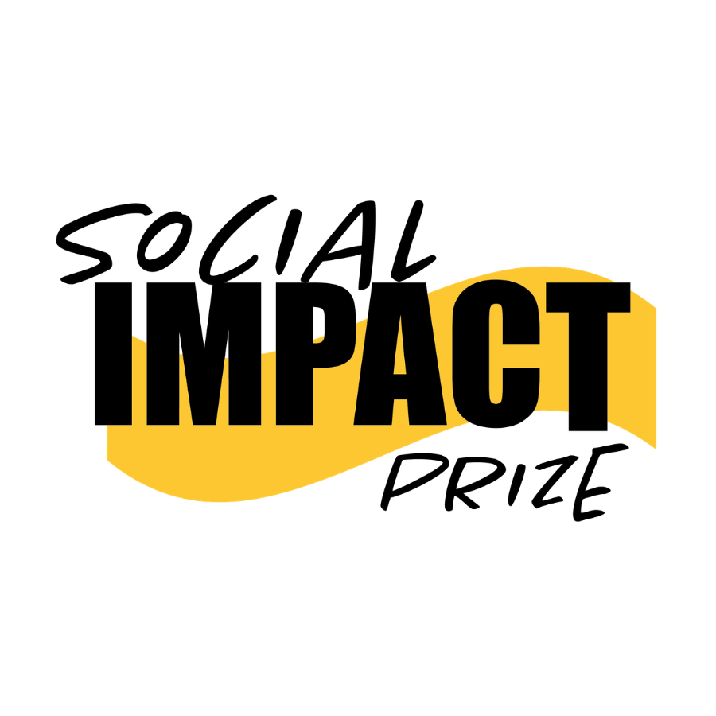
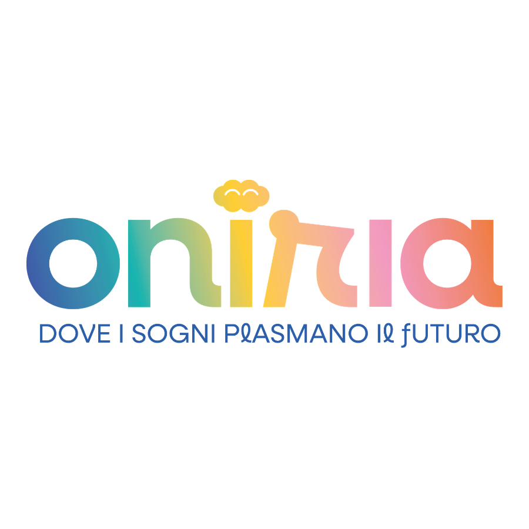
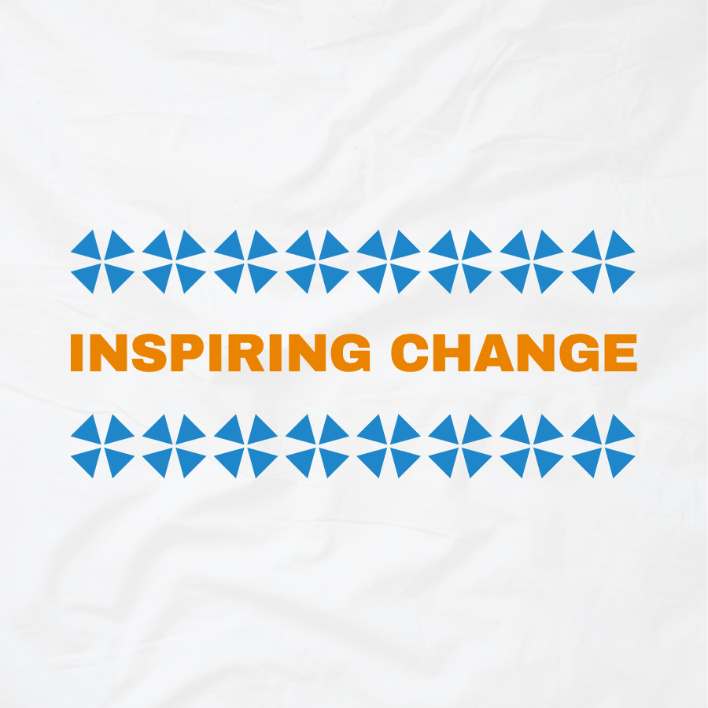

2025 - 2026
Ashoka Changemaker Days
Identità visiva, naming e asset digitali per i principali raduni della community di Ashoka Italia.
Scopri il progettoUnisco creatività e visione strategica per dare voce alle cause sociali, valorizzare le comunità e comunicare con significato.




Sono Sabina Carrea, Graphic Designer con una laurea triennale in Design e Comunicazione Visiva al Politecnico di Torino e una magistrale in Comunicazione, ICT e Media all'Università degli Studi di Torino.
Lavoro dove design e terzo settore si incontrano: con Ashoka Italia e Croce Rossa Italiana per campagne di salute e raccolta fondi.
Identità visiva, naming e asset digitali per i principali raduni della community di Ashoka Italia.
Scopri il progettoSviluppo di banner web, asset social e materiali promozionali per la finale del premio nazionale a Milano.
Scopri il progettoProgettazione UI/UX su Figma e sviluppo frontend per l'evento, integrato e pubblicato su GitHub Pages.
Scopri il progettoCampagne locali di salute e raccolta fondi: Hot Talk (IST), Soccorso Fame (merch) e Walking 4 Her.
Scopri il progettoSviluppo della brand identity, dei materiali di comunicazione e della landing page dell'evento.
Scopri il progettoSviluppo della brand identity, dei materiali di comunicazione e della landing page per l'acquisto dell'elaborato.
Scopri il progettoProgettazione di presentazioni per eventi di natura informativa, workshop e serate networking.
Scopri il progettoLogo design, linee guida di brand, sistemi visivi coerenti per organizzazioni a impatto.
Piani editoriali, creazione contenuti, campagne digitali e newsletter per il non-profit.
Pitch deck, merchandising, grafica pubblicitaria e stampa per eventi e campagne.